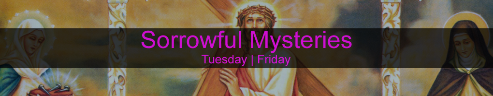
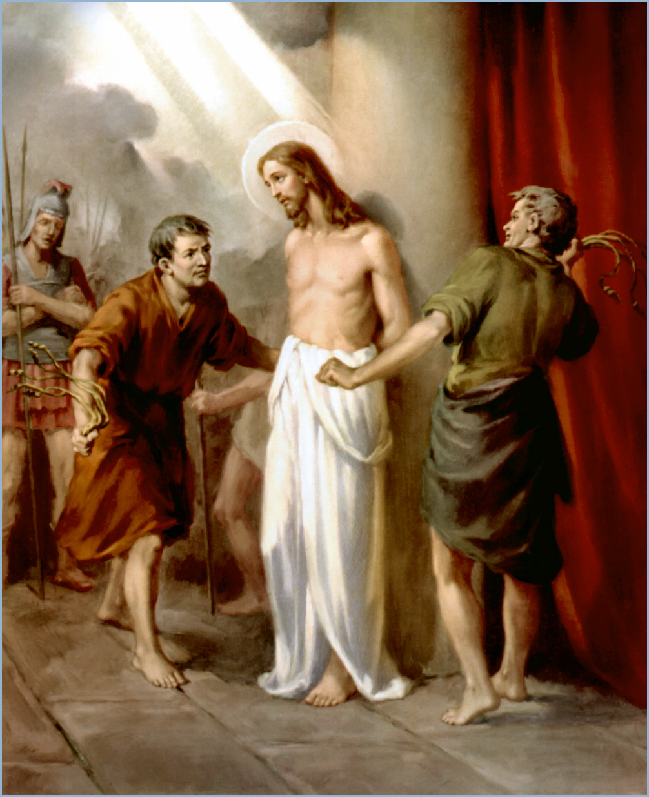
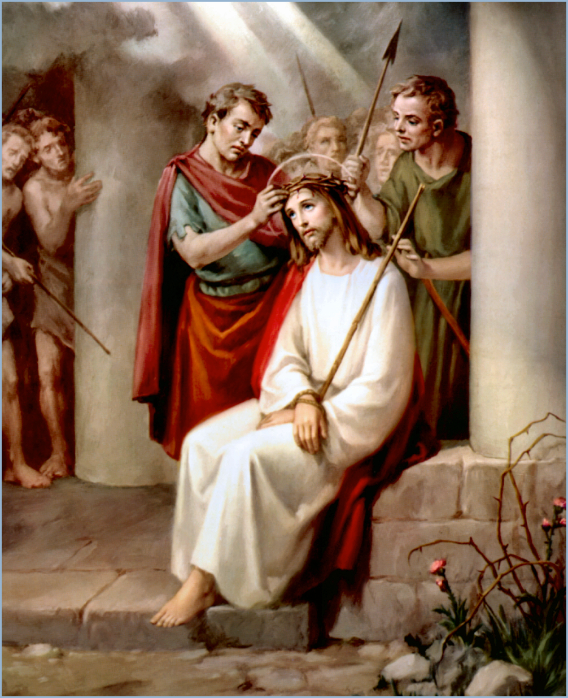
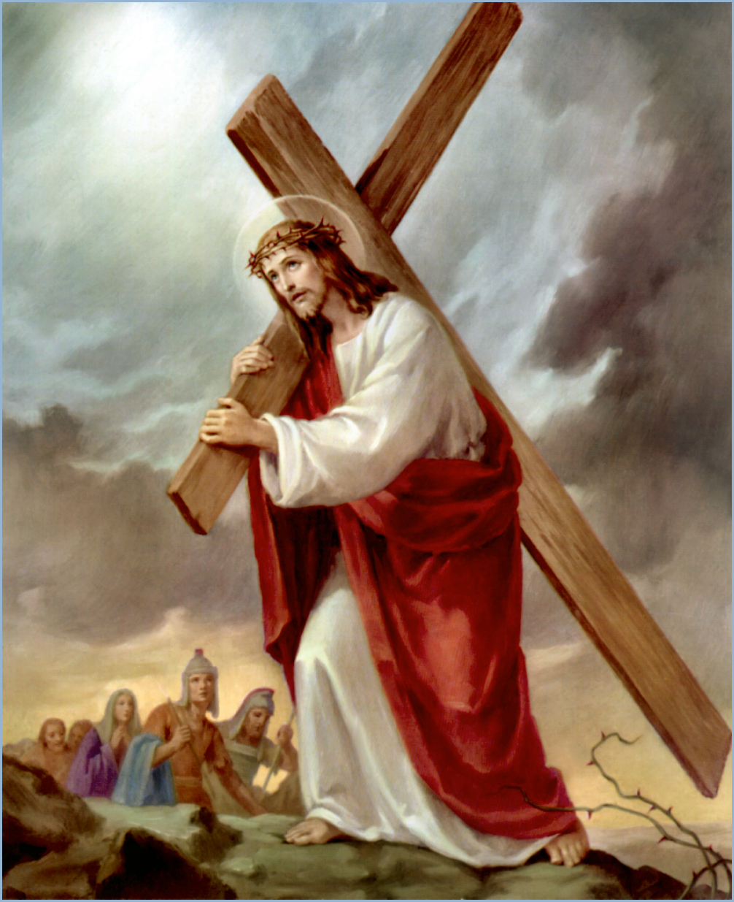
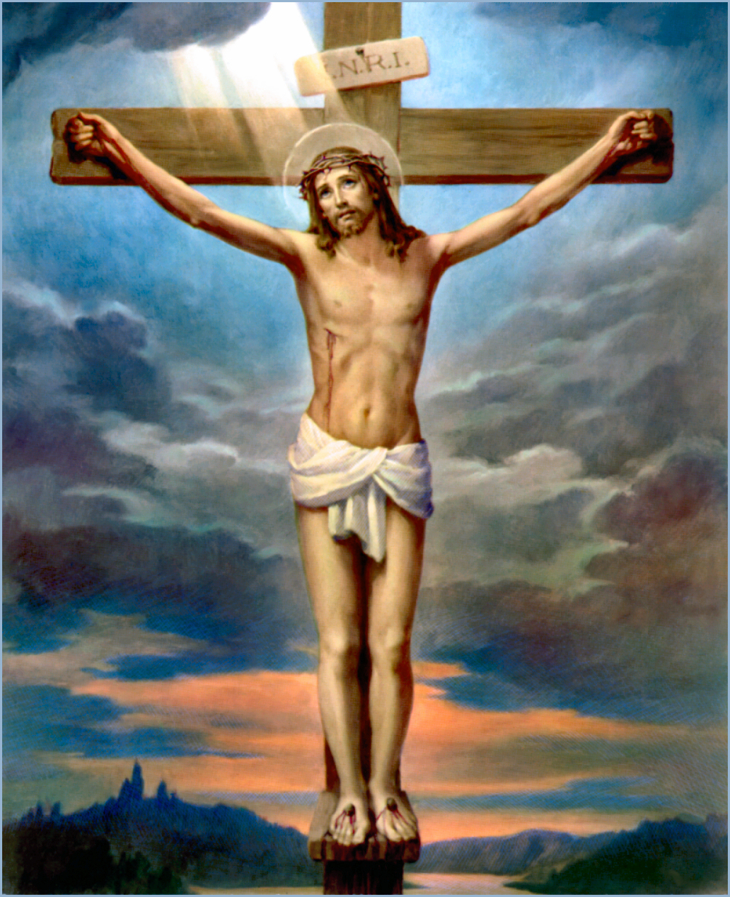

|  |
4. 5. |
|
The Agony of Jesus in the Garden |
| Then cometh Jesus with them unto a place called Gethsemane, and saith unto the disciples, Sit ye here, while I go and pray yonder. And he took with Him Peter and the two sons of Zebedee, and began to be sorrowful and very heavy. Then saith he unto them: "My soul is exceeding sorrowful, even unto death: tarry ye here, and watch with me". And he went a little farther, and fell on His face, and prayed, saying: "O my Father, if it be possible, let this cup pass from me: nevertheless not as I will, but as thou wilt". (Mat 26,36-39). And being in an agony he prayed more earnestly: and His sweat was as it were great drops of blood falling down to the ground. (Luke 22,44) In the forsaking prayer to the Father, Jesus found strength, trust, and an angel was sent to comfort Him. So Jesus will be our comforting angel. It's as He said to us: " Why do you worry in your difficulties? Be strong in me; look to your God in your most troubled hour, and you will be triumphant." Let us ask to forsake ourselves to God, to always do His will. |
|
The Scourging of Jesus at the Pillar |
|  |
| When the morning was come, all the chief priests and elders of the people took counsel against Jesus to put Him to death. And when they had bound Him, they led Him away, and delivered Him to Pontius Pilate the governor. And Jesus stood before the governor: and the governor asked Him, saying: "Art thou the King of the Jews?" And Jesus said unto Him: "Thou sayest". And when he was accused of the chief priests and elders, he answered nothing. Then said Pilate unto Him:" Hearest thou not how many things they witness against thee?" And he answered Him to never a word Pilate saith unto them: "What shall I do then with Jesus which is called Christ?" They all say unto Him: "Let Him be crucified!" And the governor said:" Why, what evil hath he done?" But they cried out the more, saying: "Let Him be crucified!" (Mat 27). And so Pilate, willing to content the people, released Barabbas unto them, and delivered Jesus, when he had scourged Him, to be crucified. (Mar 15,15) How many pains, how many torments, and how many wounds on the body of Jesus? How much blood falls to the ground, while His tormenters laugh, insult Him, and gather their strength to hit the innocent body of Jesus again? Let us ask to accept every insult for the love of our Lord, and also a true regret for our sins. |
|
The Crowning With Thorns |
|  |
| Then the soldiers of the governor took Jesus into the common hall, and gathered unto Him the whole band of soldiers. And they stripped Him, and put on Him a scarlet robe. And when they had platted a crown of thorns, they put it upon His head, and a reed in His right hand: and they bowed the knee before Him, and mocked Him, saying:" Hail, King of the Jews!" And they spit upon Him, and took the reed, and smote Him on the head. And after that they had mocked Him, they took the robe off from Him, and put His own raiment on Him, and led Him away to crucify Him. (Mat 27,27-31) Think of the indignity, outrage, pain, and humiliation that Jesus suffered. They striped Him of every dignity, He was treated as the guilt of our worst sins. He seems to say to us: " Why do you despair when you suffer? Is that the way you love me? Meditate about my passions and find in them great riches." Let us ask the gift of patience to accept all humiliations, thinking of how Jesus suffered for us. |
|
The Carrying of the Cross |
|  |
| As they were leading Him away they seized on a man, Simon from Cyrene, who was coming in from the country, and made Him shoulder the cross and carry it behind Jesus. Large numbers of people followed Him, and women too, who mourned and lamented for Him. But Jesus turned to them and said, 'Daughters of Jerusalem, do not weep for me; weep rather for yourselves and for your children. For look, the days are surely coming when people will say, "Blessed are those who are barren, the wombs that have never borne children, the breasts that have never suckled!" Then they will begin to say to the mountains, "Fall on us!"; to the hills, "Cover us!" For if this is what is done to green wood, what will be done when the wood is dry?' Now they were also leading out two others, criminals, to be executed with Him. (Luke 23,26-) Even if He had suffered just for you, Jesus would have accepted such pains, great is His love for you. Along the road to Calvary Jesus sees Mary, His Mother. Can we imagine the moment when Their eyes met? Oh how Her Heart must have ached. Let us pray to Mary for the grace to always accept our cross. |
|
The Crucifixion and Death of Jesus |
|  |
| Now there stood by the cross of Jesus His mother, and His mother's sister, Mary the wife of Cleophas, and Mary Magdalene. When Jesus therefore saw His mother, and the disciple standing by, whom he loved, he saith unto His mother:" Woman, behold thy son!" Then saith he to the disciple: "Behold thy mother!" And from that hour that disciple took her unto His own home. (John 19,25-27) Jesus wishes to see us close to His Mother; He wishes that, like children, we keep our hand in the hand of Mary. That is what He wants. He asks us to look to the heavenly Mother, that is depend on Her. He asks that we accept Our Lady as our true Mother, who will ignite in us a fervent love of Her Son. Mary, we trust in You, take us and put us in the refuge of Your Immaculate Heart, heal with Your humility our pride, that so often takes us far from God. |
|
|